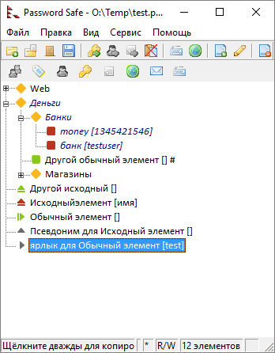
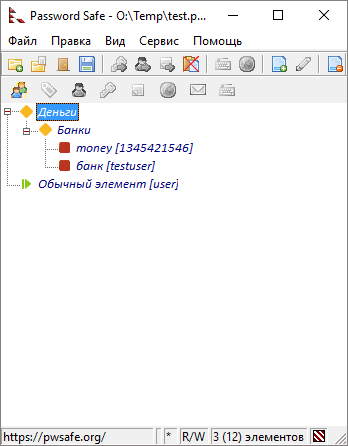
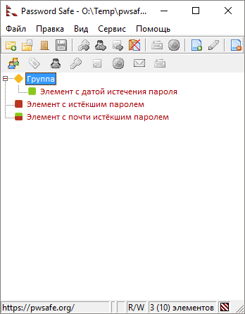

Через меню Вид можно управлять настройками отображения. Здесь можно выбрать режим отображения элементов: в виде простого списка (Простой список) или сгруппированного по категориям (Древовидный список). Также здесь можно скрыть или показать панель инструментов и выбрать стиль значков для неё. Сама панель инструментов тоже может быть настроена. Кроме того, вы можете свернуть или развернуть все группы в дереве, выбрать подмножества элементов, отфильтровать их по какому-либо условию, выбрать шрифт для отображения элементов или просмотреть отчёты о сложных операциях, таких как слияние, сравнение, импорт.
Для отображения или скрытия панели инструментов поставьте или снимите отметку с пункта меню Панель инструментов.
Для использования «современного» или «классического» набора значков, выберите Современная панель инструментов или Классическая панель инструментов соответственно.
Панель Dragbar является специальной панелью, позволяющей вставлять некоторые значения, связанные с текущим элементом, перетаскивая соответствующий значок с этой панели в нужное поле окна другого приложения. Например, для того, чтобы вставить текст заметок элемента в другое приложение с помощью панели «Dragbar», нужно выделить элемент и перетащить значок с листком (в «классическом» интерфейсе с буквой «N») в окно приложения. Когда вы отпустите левую кнопку мыши, содержимое заметок будет вставлено в выбранное поле того приложения. Для незаполненных полей элемента, соответствующие значки на панели «Dragbar» заблокированы (серые).
Кнопка «Автонабор» ведёт себя по-другому: перетаскивание её в область ввода другого окна (например, браузера) приведёт к началу автонабора в этом поле.
Примечания:
Развернуть все группы, делая видимыми все элементы (только для древовидного списка).
Свернуть все группы (при древовидном просмотре).
Здесь располагаются фильтры с некоторыми наперёд заданными условиями.
Как и любые другие фильтры, они могут быть сброшены двойным щелчком по индикатору активного фильтра (заштрихованный квадрат в правом углу строки состояния), который можно увидеть на иллюстрациях ниже.
Если на вкладке Сервис→Настройки→Резервные копии снят флажок Сохранять контейнер после вставки или редактирования, изменения не сохраняются автоматически, а выделяются цветом. Ниже приведены изображения с примерами.
Видны все элементы:

После пометки данного пункта меню будут отображены только элементы с несохранёнными изменениями. Если при активном фильтре сохранить контейнер, он будет снят и отобразятся все элементы.
Видны только изменённые элементы:

Примечание. Когда в контейнере присутствуют несохранённые изменения, в строке статуса отображается символ «*».
Если выбран этот пункт меню, в списке отображаются только те элементы, у которых задана дата истечения пароля. При этом не важно, находится ли дата истечения пароля в прошлом или будущем.
Пункт меню неактивен, если отсутствуют элементы с заданными датами истечения пароля.
Если выбран этот пункт меню, в списке отображаются только те элементы, которые были отобраны при последней операции поиска. Пункт меню неактивен, если поиск не выполнялся или был отменён. Пока данный фильтр активен, условие поиска не может быть изменено, поэтому при его активации скрывается панель поиска. Но сочетания клавиш для перехода к предыдущему (Shift+F3) и следующему (F3) элементу продолжают работать.
Примечание. Т. к. фильтр учитывает элементы, которые были отобраны при выполнении последней операции поиска (поиск не выполняется повторно), список отображаемых элементов не изменится, если после этого элементы были изменены. Пример:

Фильтр — это условие или набор условий, которым удовлетворяет или не удовлетворяет элемент. Password Safe позволяет определить фильтры и отобразить лишь те элементы, которые удовлетворяют заданным в них условиям. Для получения дополнительной информации об использовании фильтров см. здесь.
Данное подменю позволяет задать шрифт для отображения элементов в «простом» и «древовидном» списках, а также шрифт для отображения паролей в диалогах добавления и редактирования элементов. Кроме того, можно изменить шрифт для экранной клавиатуры. Этот шрифт должен поддерживать символы Unicode. Например, это может быть шрифт «Arial Unicode MS» (поставляется вместе с Microsoft's Office), «Arial Unicode» или «Lucida Sans Unicode». Но, вы можете задать и другой шрифт в соответствующем пункте меню.
Сохранённые отчёты об операциях сравнения, экспорта, импорта, поиска, слияния и синхронизации создаются в том же каталоге, где находится контейнер. При повторении операции и сохранении отчёта на диск, предыдущий отчёт для этой операции перезаписывается. Отчёты можно просмотреть позже, если контейнер останется в том же каталоге.
При выборе этого пункта меню или нажатии на клавишу F5 будет произведено обновление окна.